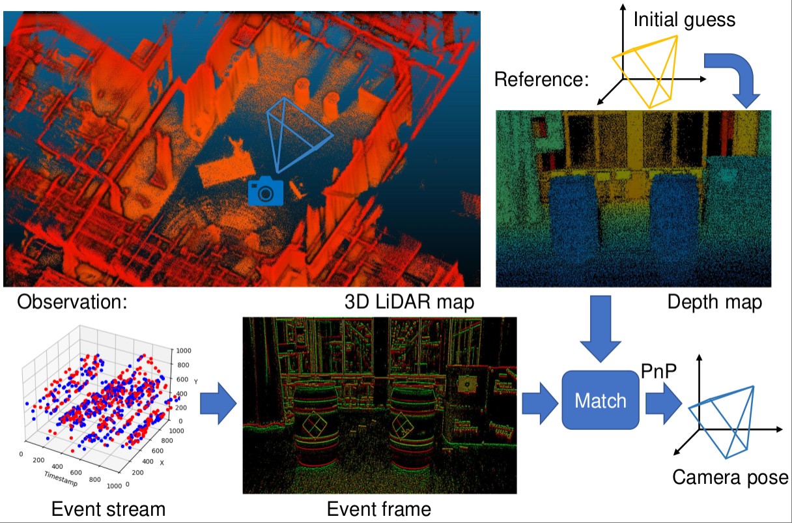
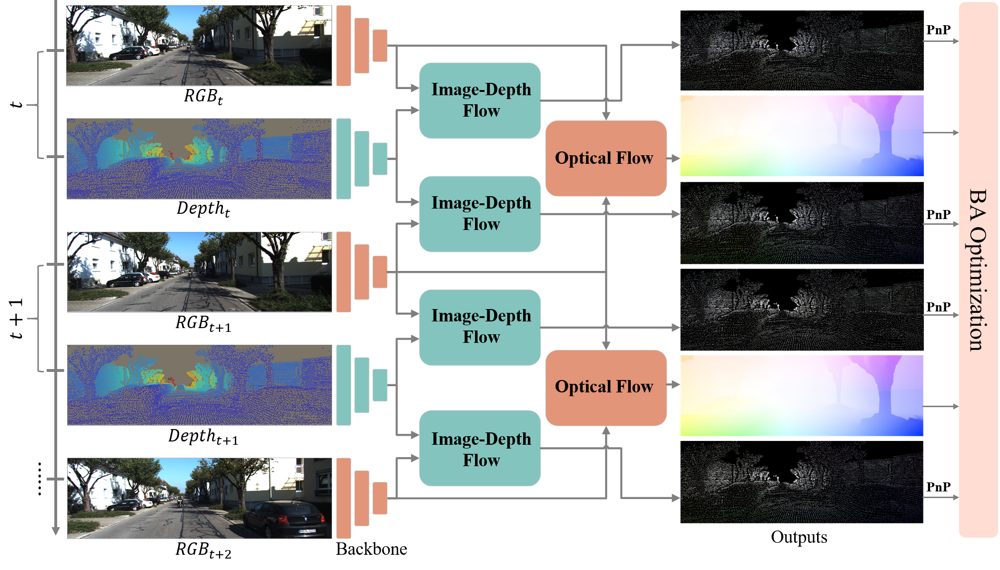
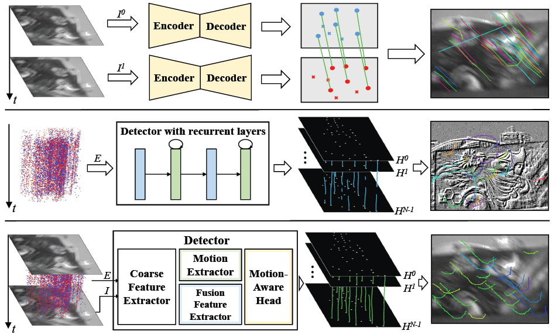
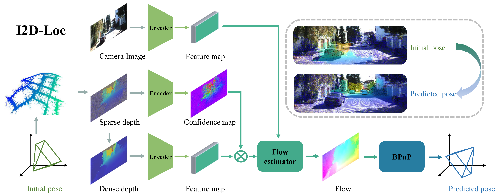

Kuangyi Chen (陈匡义)
IVC Group, Graz University of Technology
Contact: kuangyi.chen@tugraz.at / chenky721@whu.edu.cn
I'm currently a PhD candidate (2024-) at Graz University of Technology, supervised by Prof. Friedrich Fraundorfer. I received my bachelor's and master's degrees from Wuhan University, supervised by Prof. Wen Yang and Prof. Huai Yu. In summer 2021, I conducted remote visiting with Prof. Sebastian Scherer at Carnegie Mellon University. My current research interests focus on visual localization using event cameras, as well as robotic perception and scene understanding.
|  |
EVLoc: Event-based Visual Localization in LiDAR Maps via Event-Depth Registration [Paper] [Code] Kuangyi Chen*, Jun Zhang, Friedrich Fraundorfer. IEEE International Conference on Robotics and Automation (ICRA), 2025.
|
|  |
I2D-Loc++: Camera Pose Tracking in LiDAR Maps with Multi-View Motion Flows [Paper] Huai Yu*, Kuangyi Chen*, Wen Yang, Sebastian Scherer, Gui-Song Xia. IEEE Robotics and Automation Letters, 2024.
|
|  |
FE-DeTr: Keypoint Detection and Tracking in Low-quality Image Frames with Events [Paper] Xiangyuan Wang*, Kuangyi Chen*, Wen Yang, Lei Yu, Yannan Xing, Huai Yu. IEEE International Conference on Robotics and Automation (ICRA), 2024.
|
|  |
I2D-Loc: Camera localization via image to LiDAR depth flow [Paper] [Code] Kuangyi Chen, Huai Yu, Wen Yang, Lei Yu, Sebastian Scherer, Gui-Song Xia. ISPRS Journal of Photogrammetry and Remote Sensing, 2022.
|